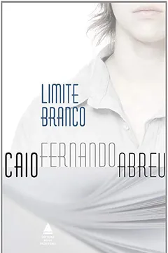
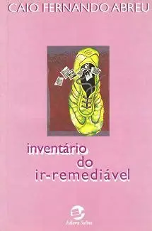
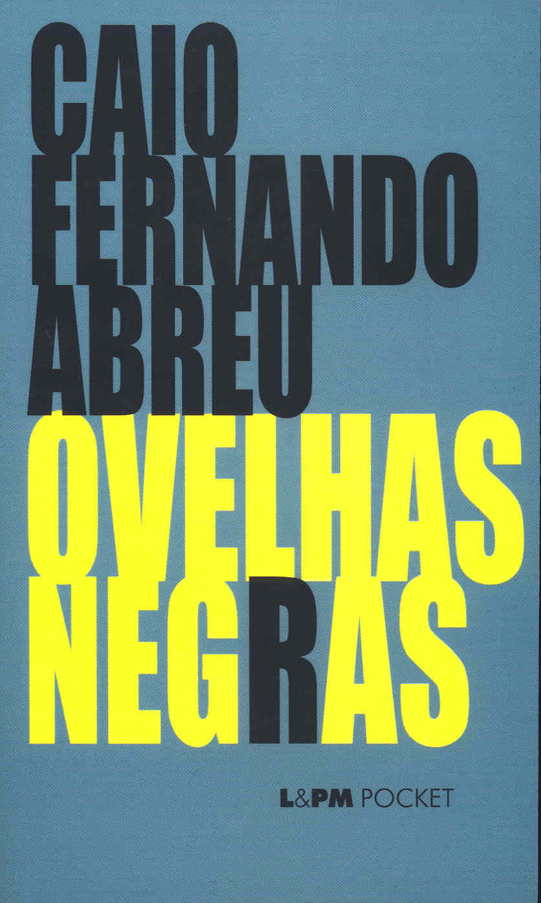
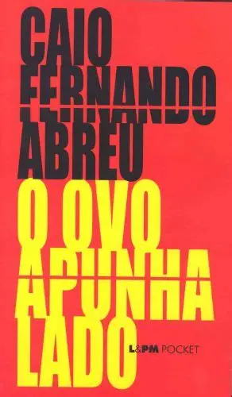

| Livros | ||
|---|---|---|
| Limite Branco |  | Publicado em 1970, Limite Branco foi o primeiro romance publicado por Caio F. Conta a his-estória de Maurício, acompanha seu crescimento, suas mazelas, sua sensibilidade e seus traumas. |
| Inventário do (ir)Remediável |  | Publicado em 1970, Inventário do (ir)Remediável, é uma coletânea de contos escolhidos pelo autor. São textos com temas como o amor, a morte, a solidão e o espanto- que dão, respectivamente, nome às divisões do livro. |
| Ovelhas Negras |  | |
| O Ovo Apunhalado |  | Publicada em 1975, a obra, assim como o inventário do (ir)Remediável, é uma coletânea de contos com grande influência de Clarice Lispector. Possui três divisões: Alfa, Beta e Gama |